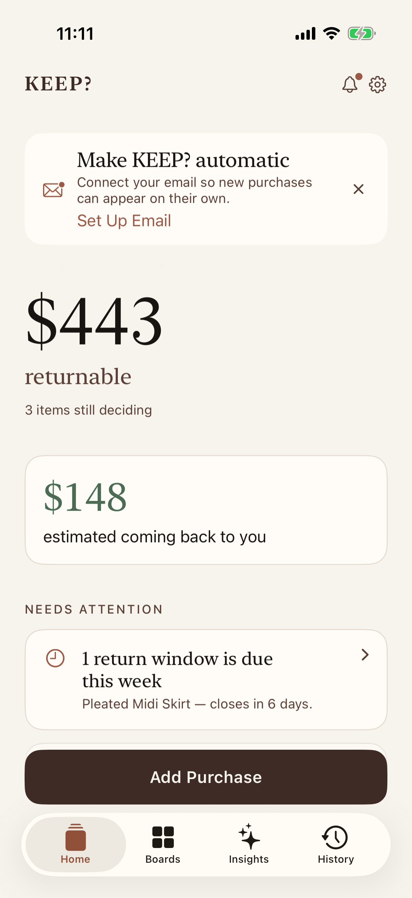
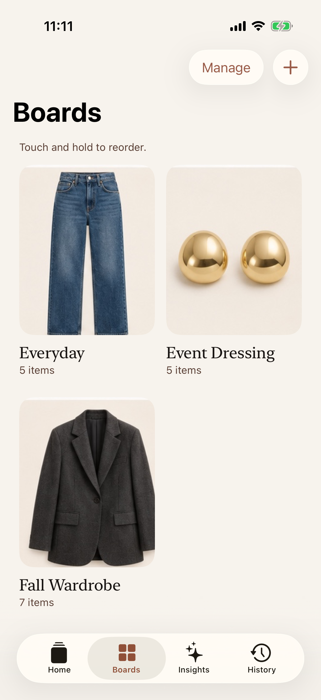
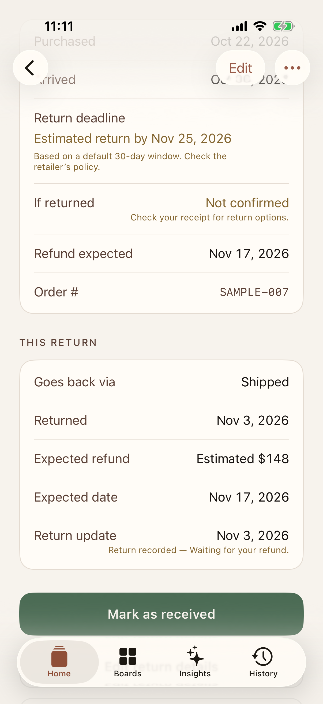
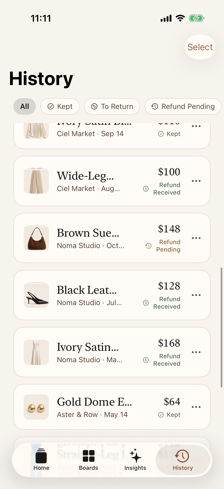
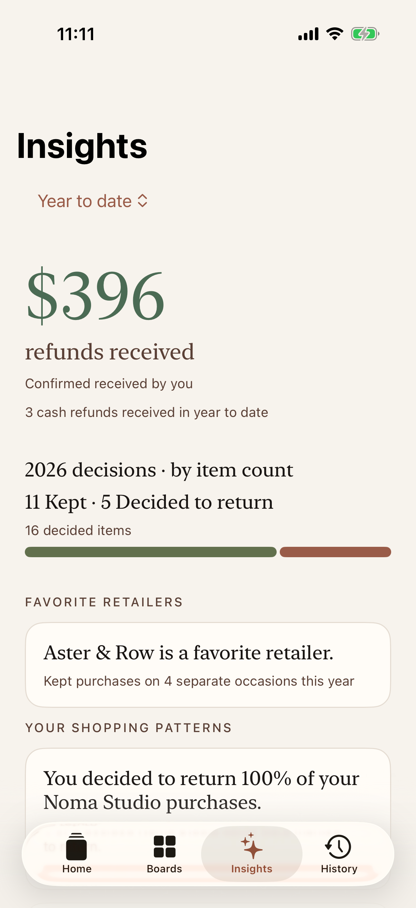

Private iPhone beta
KEEP? — The after-shopping app.
The shopping was the easy part.
The things you bought. The things you’re still deciding on. The money you’re waiting to get back. All in one place.
We’ll use your email only to contact you about the KEEP? private beta—not for newsletters or marketing. Privacy Policy.

A closer look at KEEP?





Keep track, without keeping it all in your head.
Know what you bought.
Your purchases together in one place, with boards to organize what you’re keeping and still deciding on.
Stay ahead of returns.
Keep return deadlines in view and get reminders when enabled, so you’re less likely to forget something you meant to send back.
Know what’s coming back.
See which refunds you’re waiting for and which still need a follow-up, instead of trying to remember whether the money arrived.
See your shopping more clearly.
As your history grows, spot patterns in what you keep and return to make more informed decisions next time.
Return dates may be estimated and should be confirmed with the retailer. Refund status is based on retailer information and your confirmation, not direct access to your bank account.
Optional email connection
Your inbox stays yours.
Gmail access is optional and read-only.
If you connect Gmail, KEEP? looks for relevant purchase, delivery, return, and refund messages to help organize your shopping. It can’t send, delete, edit, or mark your emails as read.
Can read relevant messagesOnly after you connect Gmail
Cannot change your mailboxNo send, delete, edit or mark-as-read permission
You can disconnectAccess can be removed from KEEP? and your Google Account
Designed with restraint
Your purchases stay on your iPhone.
Your saved purchase list lives on your iPhone. Some features use KEEP?’s service to process receipts and emails, deliver information, measure first-party activation, and support optional notifications. The public website uses no analytics, advertising trackers, cookies, or third-party scripts.
You shop. KEEP? keeps track.
One less thing on your mind.
KEEP? is an organizational aid. Always confirm retailer deadlines, eligibility, shipment status and refunds with the retailer, carrier and your account records.